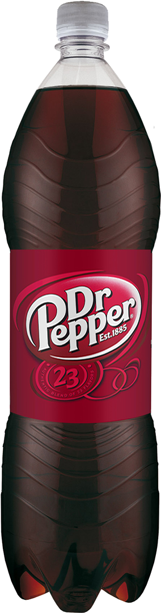
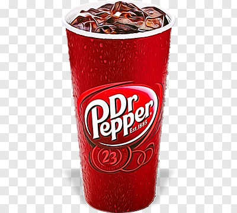

Dr Pepper is a carbonated soft drink. Dr Pepper was created in the 1880s by the American pharmacist Charles Alderton in Waco, Texas, and was first nationally marketed in the United States in 1904. It is manufactured by Keurig Dr Pepper in the United States and Canada, by The Coca-Cola Company in the United Kingdom, Japan, and South Korea, and by PepsiCo in Europe. Variants include Diet Dr Pepper and, beginning in the 2000s, a line of additional flavors.
Dr Pepper is a carbonated soft drink. Dr Pepper was created in the 1880s by the American pharmacist Charles Alderton in Waco, Texas, and was first nationally marketed in the United States in 1904. It is manufactured by Keurig Dr Pepper in the United States and Canada, by The Coca-Cola Company in the United Kingdom, Japan, and South Korea, and by PepsiCo in Europe. Variants include Diet Dr Pepper and, beginning in the 2000s, a line of additional flavors.

Although Dr Pepper has similarities to cola, the American Food and Drug Administration has ruled that Dr Pepper is not a cola,[4][5] nor a root beer, nor a fruit-flavored soft drink.[6] Rather, Dr Pepper is said to be in a category of its own kind, called "pepper soda", named for the brand. Other soft drinks in this category, such as Dublin Original and Pibb Xtra, have a similar flavor profile.

Dr Pepper is the second highest-selling carbonated soft drink in the United States, and the sixth highest-selling in the United Kingdom.